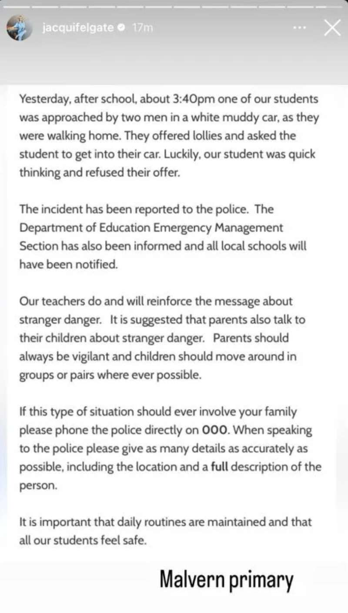

太可怕了！
澳洲的治安让家长
也开始提心吊胆！
据社交媒体爆料，墨尔本知名华人区Malvern的小学在近日曝出有人在校门口疑似诱拐儿童的嫌疑，这让家长们不免惊出一身冷汗。
现在墨尔本的治安情况不容乐观，入室抢劫，盗窃，偷车等案件层出不穷，而最让人放心不下的人身安全也不能得到保障。
根据Malvern Primary School小学发给社区的一封提醒邮件显示，在周二的放学时间，有校外人员开着车用糖果诱骗放学的小学生。

信中说道：“
在下午3:40左右放学时间，Malvern小学外，两名开着白色汽车的男子接近该校一些走路回家的学生，他们的车很脏、布满泥点。可怕的是，这两名男子拿着糖果，想引诱学生们上他们的车。
好在放学的学生们很谨慎，拒绝了男子的糖果。
事后学校表示，他们已经报警，并已经通知了教育部的紧急事务部;教育部也就此事通知了所有当地学校，提醒他们保持警惕。
我们的老师也会继续和学生们强调关于陌生人接触的危险，也希望家长们在家中与孩子们强调安全的重要性。
孩子们上学放学最好能几个人一起，不要单独行动;
家长平时要多和孩子们沟通关于陌生人的危险;
如果碰上这种事，要立刻拨打000报警。和警方沟通时，也要向他们提供尽可能多的细节，包括:事情在哪里发生的、陌生人的相貌特征…”
在此，希望所有的华人家长都能引起警惕。
Advertisements